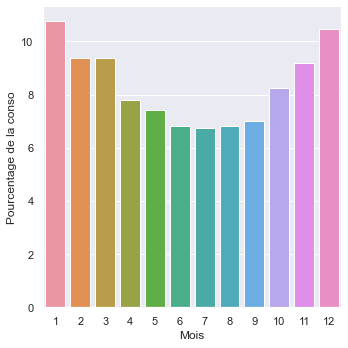
Les contrats ⚡ pour les nuls motivés
Le marché des contrats de fourniture d’électricté est pour l’instant particulièrement complexe. Plus aucun fournisseurs ne propose de contrat fixe, ou alors à des prix prohibitifs. Les contrats variables sont très difficile à lire. Ils se basent sur des indices externes pour définir les prix, d’une manière à la fois précise et difficile à comprendre.
Dans ce document je détaille mes pérégrinations dans le monde merveilleux des fournisseurs. On tentera de répondre aux questions suivantes:
- Comment sont mis à jour les prix?
- Sur quelle base?
- Comment choisir un bon contrat?
- Quel est le meilleure contrat disponible?
- Et si j’étais ministre, qu’est-ce que je devrais faire pour améliorer la situation?
Ce guide a été écrit début novembre 2022, et contient des données datant de ce moment.
Les bases
Un rappel des unités: l’énergie consommée est généralement notée en kWh (kilo-Watt-heure). Il s’agit de la consommation d’un appareil de 1000 Watts (=1kW) pendant une heure. Pensez par exemple à un aspirateur qui tourne pendant une heure. Une famille “moyenne”, sans chauffage electrique, consomme dans les environs de 3500kWh par an. Je parlerai également régulièrement de MWh (Mega-Watt-heure), qui sont en fait simplement 1000 kWh. Les contrats d’électricité sont généralement facturés à l’échelle du kWh, et les prix sont en centimes d’euro par kWh, noté c€/kWh.
Notez que les contrats d’électricités proposent généralement un prix par mois ou par trimestre. Ces prix changent à la fin de chaque période. Les prix indiqués dans les contrats ne comprennent généralement que le prix de l’énergie elle-même (ce que vous devez au fournisseur), mais vous avez en plus les différents frais et taxes liés au transport et à la distribution de l’électricité, que vous devez à Elia (le transporteur haute-tension) ou à votre GRD (Ores/RESA/…) mais que votre fournisseur récupère pour eux.
On va donc ici se concentrer uniquement sur les prix de l’énergie et pas sur ces frais divers, qui sont identiques chez tout les fournisseurs, par définition.
Egalement, notez que votre fournisseur ne connait (presque) jamais votre consommation mensuelle d’électricité. Un ménage installé ne relève son compteur qu’un fois par an. L’exception étant les déménagements et les changements de fournisseurs.
Etant donné que votre fournisseur émet un prix différent chaque mois, il est nécessaire de “distribuer” votre consommation annuelle (la différence entre votre relevé de cette année et celui de l’année dernière) sur chaque mois. A cette fin, les fournisseurs d’énergie utilisent tous une courbe de consommation “typique” du ménage “moyen”, basés sur les relévés du réseau. Ces courbes “RLP” (Real Load Profiles) sont distribuées par Synergrid. Voici la courbe des ménages qui sont chez Ores-Namur:
On consomme moins d’électricité en été, plus en hiver. Il faut y voir l’impact
- du chauffage électrique (même si vous n’en avez pas, on parle ici du belge “moyen”)
- de la nécessité d’allumer plus la lumière
- de la plus grande présence chez soit
- (entre autres choses)
Même si vous consommez différement, vous payerez votre énergie comme si vous aviez suivi exactement cette répartition. Que vous ayez du chauffage électrique ou pas, que vous ayez passé 3 mois dans un pays chaud en plein hiver, peu importe. Vous êtes facturé sur cette base. C’est valable aussi si vous avez un compteur intelligent, du moins en Wallonie: les fournisseurs n’en tiennent pas encore compte.
Les seuls moyens d’obliger un fournisseur à vous faire payer exactement ce que vous avez consommé est de changer de contrat chaque mois (car cela entraîne un relevé de compteur). Malheureusement, cela n’est pas une bonne idée, comme on va le voir plus loin.
Les différents contrats disponibles
J’ai ici listés les différents contrats disponibles en Novembre 2022 en Wallonie et Bxl. Tout les contrats ne sont pas disponibles partout, notamment à Bxl où seul Engie et TotalEnergies proposent des contrats.
Note
TotalEnergies propose des contrat différent pour la Wallonie et Bxl. Ceux de Bxl sont en fait les mêmes, juste 1.3c€/kWh plus cher.
Notez que les tarifs changent chaque mois, y compris les multiplicateurs, biais, et indices. Le meilleur contrat à un mois donné peut devenir beaucoup moins bon le mois suivant!
Note
Je me dois de signaler que j’ai demandé à la CREG (le régulateur fédéral) de me fournir une liste des contrats existant et historique pour écrire ce poste de blog. Ils ont (de leur aveu) une telle base de donnée, mais ont refusés de me la faire parvenir au motif que ma demande était “abusive”.
Il est désespérant que j’aie à refaire le travail d’un organisme public et que par ailleurs il refuse de partager une information qui devrait être publique, ne serait-ce que par bon sens, mais également légalement, via la loi sur la publicité de l’administration.
| Fournisseur | Contrat | Dispo | Coût fixe (€/an) | Indice | Monohoraire ☀️/🌙 |
Bihoraire ☀️ | Bihoraire 🌙 | Exclusif nuit 🌡️ | ||||
|---|---|---|---|---|---|---|---|---|---|---|---|---|
| x | y | x | y | x | y | x | y | |||||
| Luminus | ComfyFlex | WA | 63.6 | belpex_q | 0.1128 | 4.441 | 0.1350 | 4.348 | 0.0940 | 4.000 | 0.0940 | 4.000 |
| Luminus | ComfyFlex+ | WA | 63.6 | belpex_q | 0.1128 | 6.441 | 0.1350 | 6.348 | 0.0940 | 6.000 | 0.0940 | 6.000 |
| Luminus | Actif+ | WA | 79.5 | EMarketCWE | 0.1160 | 22.674 | 0.1364 | 24.886 | 0.0961 | 20.226 | 0.0961 | 20.226 |
| Luminus | Basic | WA | 21.2 | belpex_q | 0.1128 | 0.970 | 0.1350 | 1.520 | 0.0940 | 1.270 | 0.0940 | 1.270 |
| Luminus | Eco+ | WA | 79.5 | EMarketCWE | 0.1150 | 22.674 | 0.1304 | 24.886 | 0.1022 | 20.226 | 0.1022 | 20.226 |
| Luminus | Ecoflex | WA | 68.9 | EMarketCWE | 0.1150 | 22.687 | 0.1304 | 24.715 | 0.1022 | 20.486 | 0.1022 | 20.486 |
| Luminus | Essential | WA | 42.4 | EMarketCWE | 0.1160 | 22.534 | 0.1364 | 22.622 | 0.0961 | 22.221 | 0.0961 | 22.221 |
| Luminus | Optimal | WA | 53.0 | EMarketCWE | 0.1160 | 23.264 | 0.1364 | 25.402 | 0.0961 | 20.951 | 0.0961 | 20.951 |
| TotalEnergies | Pixel (WA) | WA | 25 | belpex_m_rlp | 0.1063 | 3.150 | 0.1250 | 3.150 | 0.0930 | 3.150 | 0.0950 | 3.000 |
| TotalEnergies | Pixel Blue (WA) | WA | 70 | belpex_m_rlp | 0.1063 | 3.200 | 0.1250 | 3.200 | 0.0930 | 3.200 | 0.0950 | 3.050 |
| TotalEnergies | Pixel (BXL) | BXL | 25 | belpex_m_rlp | 0.1063 | 4.450 | 0.1250 | 4.450 | 0.0930 | 4.450 | 0.0950 | 4.300 |
| TotalEnergies | Pixel Blue (BXL) | BXL | 70 | belpex_m_rlp | 0.1063 | 4.500 | 0.1250 | 4.500 | 0.0930 | 4.500 | 0.0950 | 4.350 |
| Eneco | Soleil & Vent Variable | WA | 65 | endex103 | 0.1000 | 6.810 | 0.1000 | 14.740 | 0.1000 | 0.416 | 0.1000 | 0.416 |
| Eneco | Soleil & Vent Flex | WA | 65 | belpex_q_rlp | 0.1000 | 5.571 | 0.1000 | 5.711 | 0.1000 | 5.458 | 0.1000 | 5.458 |
| Engie | Easy | WA+BXL | 58.3 | endex103 | 0.1091 | 4.495 | 0.1336 | 4.514 | 0.0898 | 3.718 | 0.0898 | 3.718 |
| Engie | Flow | WA+BXL | 53.0 | belpex_m | 0.1067 | 0.980 | 0.1177 | 0.790 | 0.0978 | 0.590 | 0.0978 | 0.590 |
| Engie | Direct | WA+BXL | 26.34 | belpex_m | 0.1081 | 2.836 | 0.1303 | 2.916 | 0.0883 | 2.707 | 0.0883 | 2.707 |
| DATS24 | Variable | WA | 35.04 | belpex_m_rlp | 0.1067 | 0.592 | 0.1269 | 0.592 | 0.0967 | 0.592 | 0.0967 | 0.592 |
| OCTA+ | Eco Chill | WA | 130.0 | belpex_m_rlp | 0.1127 | 1.250 | 0.1284 | 1.250 | 0.0971 | 1.250 | 0.1027 | 1.250 |
| OCTA+ | Chill | WA | 65.0 | belpex_m_rlp | 0.1127 | 1.000 | 0.1284 | 1.000 | 0.0971 | 1.000 | 0.1027 | 1.000 |
| MEGA | Smart | WA | 42.4 | belpex_m | 0.1195 | 2.550 | 0.1425 | 2.550 | 0.1065 | 2.550 | 0.1065 | 2.550 |
| MEGA | Online | WA | 15.9 | belpex_m | 0.1150 | 1.200 | 0.1150 | 1.200 | 0.1150 | 1.200 | 0.1150 | 1.200 |
| MEGA | Cosy | WA | 58.3 | belpex_m | 0.1195 | 2.550 | 0.1425 | 2.550 | 0.1065 | 2.550 | 0.1065 | 2.550 |
| MEGA | Group | WA | 68.9 | belpex_m | 0.1150 | 2.550 | 0.1150 | 2.550 | 0.1150 | 2.550 | 0.1150 | 2.550 |
| Bolt | Bolt | WA | 105.0 | belpex_q | 0.1343 | 6.190 | 0.1343 | 6.190 | 0.1343 | 6.190 | 0.1343 | 6.190 |
| Bolt | Online | WA | 73.44 | belpex_q | 0.1343 | 6.190 | 0.1343 | 6.190 | 0.1343 | 6.190 | 0.1343 | 6.190 |
| Bolt | Go | WA | 10.44 | belpex_q | 0.1343 | 6.190 | 0.1343 | 6.190 | 0.1343 | 6.190 | 0.1343 | 6.190 |
On voit qu’il y a une pléthore d’offre différentes. Et encore, le nombre de contrat différent a été considérablement réduit depuis le début de la crise énergétique.
Pour un client possédant un compteur monohoraire, la comparaison se révèle compliquée: il y a plusieurs indices différents. Pour le client en bihoraire, la tâche est encore plus hardue: il y a deux fois plus de paramètres à considérer!
On peut tenter de simplifier quelque peu cette grille pour le bihoraire, en regardant la répartition “moyenne” de consommation en heure pleine et en heure creuse, via les courbes RLP dont on a discuté plus haut. Cela donne en gros que c’est 50/50. Le ménage “moyen” consomme autant en heure creuse qu’en heure pleine. Faisons cette hypothèse à partir de maintenant. On va aussi abandonner l’analyse de l’exclusif nuit, qui concerne une minorité.
| Fournisseur | Contrat | Dispo | Coût fixe (€/an) | Indice | Monohoraire | Bihoraire (moyenne) | ||
|---|---|---|---|---|---|---|---|---|
| x | y | x | y | |||||
| Luminus | ComfyFlex | WA | 63.6 | belpex_q | 0.1128 | 4.441 | 0.1145 | 4.174 |
| Luminus | ComfyFlex+ | WA | 63.6 | belpex_q | 0.1128 | 6.441 | 0.1145 | 6.174 |
| Luminus | Actif+ | WA | 79.5 | EMarketCWE | 0.1160 | 22.674 | 0.1162 | 22.556 |
| Luminus | Basic | WA | 21.2 | belpex_q | 0.1128 | 0.970 | 0.1145 | 1.395 |
| Luminus | Eco+ | WA | 79.5 | EMarketCWE | 0.1150 | 22.674 | 0.1163 | 22.556 |
| Luminus | Ecoflex | WA | 68.9 | EMarketCWE | 0.1150 | 22.687 | 0.1163 | 22.600 |
| Luminus | Essential | WA | 42.4 | EMarketCWE | 0.1160 | 22.534 | 0.1162 | 22.421 |
| Luminus | Optimal | WA | 53.0 | EMarketCWE | 0.1160 | 23.264 | 0.1162 | 23.176 |
| TotalEnergies | Pixel (WA) | WA | 25 | belpex_m_rlp | 0.1063 | 3.150 | 0.1090 | 3.150 |
| TotalEnergies | Pixel Blue (WA) | WA | 70 | belpex_m_rlp | 0.1063 | 3.200 | 0.1090 | 3.200 |
| TotalEnergies | Pixel (BXL) | BXL | 25 | belpex_m_rlp | 0.1063 | 4.450 | 0.1090 | 4.450 |
| TotalEnergies | Pixel Blue (BXL) | BXL | 70 | belpex_m_rlp | 0.1063 | 4.500 | 0.1090 | 4.500 |
| Eneco | Soleil & Vent Variable | WA | 65 | endex103 | 0.1000 | 6.810 | 0.1000 | 7.578 |
| Eneco | Soleil & Vent Flex | WA | 65 | belpex_q_rlp | 0.1000 | 5.571 | 0.1000 | 5.585 |
| Engie | Easy | WA+BXL | 58.3 | endex103 | 0.1091 | 4.495 | 0.1117 | 4.116 |
| Engie | Flow | WA+BXL | 53.0 | belpex_m | 0.1067 | 0.980 | 0.1077 | 0.690 |
| Engie | Direct | WA+BXL | 26.34 | belpex_m | 0.1081 | 2.836 | 0.1093 | 2.811 |
| DATS24 | Variable | WA | 35.04 | belpex_m_rlp | 0.1067 | 0.592 | 0.1118 | 0.592 |
| OCTA+ | Eco Chill | WA | 130.0 | belpex_m_rlp | 0.1127 | 1.250 | 0.1127 | 1.250 |
| OCTA+ | Chill | WA | 65.0 | belpex_m_rlp | 0.1127 | 1.000 | 0.1127 | 1.000 |
| MEGA | Smart | WA | 42.4 | belpex_m | 0.1195 | 2.550 | 0.1245 | 2.550 |
| MEGA | Online | WA | 15.9 | belpex_m | 0.1150 | 1.200 | 0.1150 | 1.200 |
| MEGA | Cosy | WA | 58.3 | belpex_m | 0.1195 | 2.550 | 0.1245 | 2.550 |
| MEGA | Group | WA | 68.9 | belpex_m | 0.1150 | 2.550 | 0.1150 | 2.550 |
| Bolt | Bolt | WA | 105.0 | belpex_q | 0.1343 | 6.190 | 0.1343 | 6.190 |
| Bolt | Online | WA | 73.44 | belpex_q | 0.1343 | 6.190 | 0.1343 | 6.190 |
| Bolt | Go | WA | 10.44 | belpex_q | 0.1343 | 6.190 | 0.1343 | 6.190 |
Les différents indices
Je décris ici les différents indices. Le but est à la fin de pouvoir les comparer efficacement.
Le marché day-ahead: belpex_m, belpex_q, belpex_m_rlp, belpex_q_rlp
Le marché day-ahead, est, comme je l’expliquais plus haut, le marché où un fournisseur peut acheter au jour J l’électricité qu’il doit fournir au jour J+1. Ce marché est régulé et supervisé par des règles européennes, notamment de transparence. Son historique est librement accessible.
Il en existe un par pays. Pour la Belgique, il s’agit du Belpex, aussi appelé EPEX DAM, EPEX SPOT, BELPEX SPOT, et d’autres variantes. Au cours de chaque journée, les différents opérateurs sur le marché s’échange l’énergie heure par heure pour le lendemain. On obtient donc, chaque jour, 24 prix, un pour chaque heure de la journée. Le prix de la journée est la moyenne de ces prix.
Voici la forme qu’à pris le Belpex ces derniers mois:
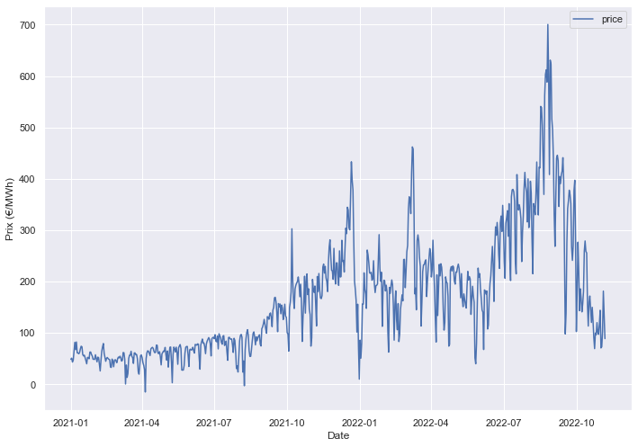
Vu que le prix n’est connu qu’au jour-le-jour, le tarif auquel vous payez votre énergie dans un contrat basé sur Belpex n’est pas connu au moment où vous consommez votre électricité: elle ne l’est qu’en fin de mois ou de trimestre, après coup.
A partir de là, on définit différents indices:
belpex_m, moyenne mensuelle
belpex_m est la moyenne des cotations (journalières ou horaire, c’est la même chose) du Belpex pour un mois donné. Le prix du mois de Novembre 2022 sera donc la moyenne des cotations entre le 1ier Novembre 2022 et le 30 Novembre 2022.
Voici le graphique de la valeur du belpex_m. La valeur pour novembre est la moyenne du mois arrétée à la date de dernière mise à jour de cet article.
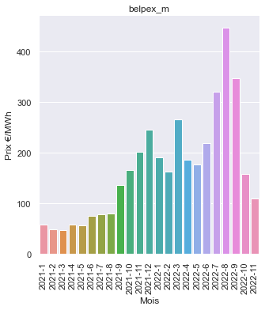
belpex_q, moyenne trimestrielle
belpex_q (q pour ‘quarter’ ou trimestre en anglais) est la moyenne des cotations (journalières ou horaire, c’est la même chose) du Belpex pour un trimestre donné. Le prix du mois de Novembre 2022 sera donc la moyenne des cotations entre le 1ier Octobre 2022 et le 31 Decembre 2022, le trimestre dans lequel se trouve le mois de Novembre.
On a la propriété que pour un certain trimestre Q (disons, le 4ième) contenant les mois M, M+1 et M+2 (Octobre, Novembre, Décembre par exemple), le prix du belpex_q pour le trimestre Q est la moyenne du belpex_m pour les trois mois du trimestre. Autrement dit, le prix du dernier trimestre est égal à la moyenne des prix des mois du trimestre. Mais vous ne consommez pas de manière égale chaque mois…
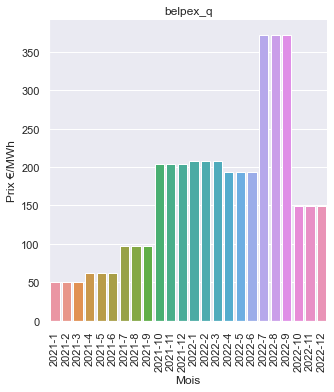
belpex_m_rlp et belpex_q_rlp, moyennes pondérées
Une variante très utilisée des indices ci-dessus est leur version pondérée par la courbe RLP (souvenez-vous, c’est la courbe de la consommation moyenne des ménages). L’idée est que si un ménage moyen consomme plus un certain jour plutôt qu’un autre, ce premier jour devrait compter “plus” dans la moyenne que l’autre.
Cela permet au fournisseur de coller plus à ses coûts effectifs (les jours où les ménages consomment “plus”, il doit effectivement acheter “plus” d’électricité), et cela à un effet mathématique intéressant: on a la propriété que si un ménage consomme comme le ménage moyen (en suivi la courbe RLP), alors le prix facturé à un ménage ayant un tarif basé sur belpex_m_rlp (mensuel) sera identique que s’il était sur belpex_q_rlp (trimestriel).
Les indices pondérés par RLP sont toujours un peu plus cher, en moyenne de 2%, car on consomme plus au moment où les prix sont plus chers (en fait c’est l’inverse: les prix sont plus chers car on consomme plus ;-))
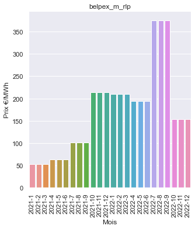
En résumé, pour le Belpex, quelle différence?
En pratique il y a très peu de différence entre ces quatres indices. Les différences seront subtiles et vraiment à la marge, certainement inférieures à 5%. On peut s’amuser à faire le calcul pour le ménage “moyen”, suivant la courbe RLP.
| Indice | prix moyen 2021 | prix moyen 2022 |
|---|---|---|
belpex_m |
107.00 €/MWh | 226.46 €/MWh |
belpex_q |
105.85 €/MWh | 230.85 €/MWh |
belpex_m_rlp |
109.85 €/MWh | 229.97 €/MWh |
belpex_q_rlp |
109.85 €/MWh | 233.23 €/MWh |
Notez bien que les prix de 2022 sont jusqu’au milieu du mois de Novembre, ce qui casse légèrement la propriété énoncée ci-dessus pour les contrats pondérés RLP (q=m), même si ça reste vrai pour des années complètes (on le voit pour 2021).
On voit que la différence est très limitée, et que le meilleur indice dépend de l’année. On tentera donc de prendre un contrat non-pondéré par RLP, mais pas d’inquiétude concernant la durée d’indexation (si ce n’est pour avoir une meilleure visibilité).
Le marché “future”: endex103, endex303, et endexXYZ en général
Le marché “future”, aussi appelé Endex, permet d’acheter de l’énergie qui sera livrée plus tard. Ce “plus tard” peut être très variable: on peut acheter de l’énergie pour le mois prochain, pour dans deux mois, pour un autre trimestre, pour dans deux ans… et ce à des durées variables: pour un mois, pour un trimestre, voire pour une année complète.
Il est donc possible de construire beaucoup d’indices différents. Dans les contrats listés plus tôt dans ce billet de blog, l’indice utilisé en général est endex103. Le 103 signifie qu’on va regarder le prix moyen de l’électricité pour livraison durant le trimestre pendant le mois précédent le trimestre.
Par exemple, pour le quatrième trimestre de 2022, endex103 est le prix moyen d’acheter, au cours du mois de Septembre, de l’énergie pour livraison au dernier trimestre.
D’autres formules sont possibles. La règle générale est la suivante: pour endexXYZ (pour endex103, on a donc \(X=1\), \(Y=0\) et \(Z=3\)), le prix pour les mois \(M+1\) jusque \(M+Z\) sont calculés à partir du prix d’achat de l’énergie pour ces mêmes mois aux mois \(M-Y\) jusque \(M-Y-X+1\). Pour endex303 le prix pour \(M+1=\text{Octobre}, M+2=\text{Novembre}, M+3=\text{Décembre}\) est calculé sur la base du prix d’achat de l’énergie, pour livraison durant ces mois, pendant les mois de \(M-0-0=\text{Septembre}, M-0-1=\text{Aout}, M-0-2=\text{Juillet}\). Pour endex-12-0-12 il s’agit donc du prix moyen de livraison d’une année pendant l’année précédente (on regarde les prix en 2021 pour livraison en 2022). Pour endex-12-12-12, on décale: on regarde les prix de 2020 pour livraison en 2022.
J’espère que vous êtes encore avec moi. Le plus dur est passé, je pense.
A la différence d’un indice day-ahead, les indices future ont l’avantage d’être connu avant la consommation. Etant donné qu’on se base sur les prix des mois précédents, le prix auquel vous consommez votre énergie est connu à l’avance.
Voici les prix récents de endex103:
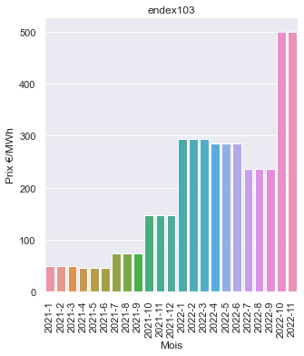
500€/MWh ce trimestre (fin 2022)!
Pourquoi une telle différence avec le belpex?
Contrairement à ce qu’on pourrait croire (ou pas), le marché est très mauvais pour prédire les prix de l’électricité future. On pourrait s’attendre à ce que le tarif endex de livraison au mois d’octobre acheté en septembre, soit proche du prix day-ahead du mois d’octobre.
Il n’est est rien, et en fait, le prix endex d’aujourd’hui pour le futur proche est correlé avec le prix day-ahead d’aujourd’hui:
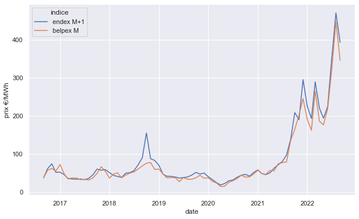
Sur ce graphique, on voit le prix d’acheter de l’énergie “pour demain” (day-ahead, belpex M) ou “pour le mois prochain” (future, endex M+1). On voit un très, très forte corrélation entre les deux. On remarque aussi qu’en général le prix “future” est légèrement plus élévé.
La raison de l’explosion du tarif endex103 c’est qu’au mois d’aout/septembre, on a vu une explosion des marchés day-ahead et future dûs à l’incertitude liée à la guerre en Ukraine ET à l’état des centrales nucléaires en France, massivement et exceptionnelement en panne. En cas de forte incertitude, les marchés future ont tendance à accroitre leur tarif par “sécurité”. Le prix excessif de septembre s’est donc retrouvé “gardé” pour tout le trimestre fin 2022.
On peut en tirer les conclusions suivantes:
- Les tarifs “pour demain” et “pour le futur proche” sont généralement très similaires
- Donc, les tarifs basés sur endex sont un décalage des tarifs belpex
- Donc, il est intéressant d’avoir un tarif endex quand le marché monte (pour garder les prix bas passés plus longtemps) et d’avoir un tarif belpex quand le marché descend (pour éviter les prix passés très cher)
Voici le même graphique pour le trimestre suivant:
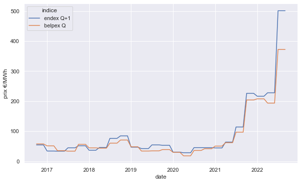
Les tarifs composites
Le seul tarif composite utilisé actuellement est le EMarketCWE. Il est en fait une moyenne entre endex-12-12-12, endex-12-0-12 et endex303. Autrement dit, pour, disons, le 4ième trimestre 2022, il est la moyenne entre:
endex-12-12-12: Le prix d’achat d’énergie pour tout 2022, achetée en 2020endex-12-0-12: Le prix d’achat d’énergie pour tout 2022, achetée en 2021endex303: Le prix d’achat d’énergie pour le 4ième trimestre 2022, achetée lors du 3ième trimestre 2022.
Bien que endex303 soit extrèmement cher ce trimestre (500€/MWh), les autres sont très faibles: on ne savait pas en 2020 et en 2021 que la guerre en Ukraine allait arriver ou que le parc nucléaire français allait souffrir, et on était même en plein milieu de la crise du covid!
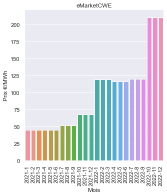
Ce tarif permet donc d’avoir un indice largement en dessous des prix de marché. Alléchant. Malheureusement, le fournisseur qui utilise cet indice, Luminus, n’est pas dupe: pour compenser le prix extrèmement bas de l’indice, il ajoute un bais (le \(y\) dans le tableau des contrats) très élevé pour compenser. Ce qui fait qu’aucun contrat basé sur eMarketCWE n’est intéressant pour l’instant.
Un récapitulatif des indices
- Le Belpex, pour l’instant, est le seul bon choix, vu les prix exorbitant du endex103/endex303 pour ce trimestre.
- En général, les tarifs endex (“future”) ont tendance à être un peu plus cher que les tarifs belpex (“day-ahead”)
A la recherche du meilleur contrat
Maintenant que l’on a une bonne idée des différents indices, on peut comparer les différents contrats. A cette fin, nous allons poser quelques hypothèses.
La première, c’est qu’on va tenter de tout mettre en rapport avec belpex_m et belpex_q. Pour chaque contrat sur un indice différent, on va les “convertir” vers ces indices. Pour cela on va calculer les différences de prix moyennes entre chaque indice sur 2021 et 2022.
| Indice | Pourcentage de différence avec belpex, moyenne |
|---|---|
endex103 |
22.18 |
belpex_m |
0 |
belpex_q |
0 |
belpex_m_rlp |
1.97 |
belpex_q_rlp |
2.02 |
EMarketCWE |
-33.14 |
On peut ensuite reprendre notre tableau des contrats au dessus, et convertir les multiplicateurs, en faisant comme si tout était du belpex_m:
| WALLONIE | ||||||
|---|---|---|---|---|---|---|
| Fournisseur | Contrat | Coût fixe (€/an) | Monohoraire | Bihoraire (moyenne 50/50) | ||
| x | y | x | y | |||
| Luminus | ComfyFlex | 63.6 | 0.1128 | 4.441 | 0.1145 | 4.174 |
| Luminus | ComfyFlex+ | 63.6 | 0.1128 | 6.441 | 0.1145 | 6.174 |
| Luminus | Actif+ | 79.5 | 0.0776 | 22.674 | 0.0777 | 22.556 |
| Luminus | Basic | 21.2 | 0.1128 | 0.970 | 0.1145 | 1.395 |
| Luminus | Eco+ | 79.5 | 0.0769 | 22.674 | 0.0778 | 22.556 |
| Luminus | Ecoflex | 68.9 | 0.0769 | 22.687 | 0.0778 | 22.600 |
| Luminus | Essential | 42.4 | 0.0776 | 22.534 | 0.0777 | 22.421 |
| Luminus | Optimal | 53.0 | 0.0776 | 23.264 | 0.0777 | 23.176 |
| TotalEnergies | Pixel (WA) | 25 | 0.1084 | 3.150 | 0.1111 | 3.150 |
| TotalEnergies | Pixel Blue (WA) | 70 | 0.1084 | 3.200 | 0.1111 | 3.200 |
| Eneco | Soleil & Vent Variable | 65 | 0.1222 | 6.810 | 0.1222 | 7.578 |
| Eneco | Soleil & Vent Flex | 65 | 0.1020 | 5.571 | 0.1020 | 5.585 |
| Engie | Easy | 58.3 | 0.1333 | 4.495 | 0.1365 | 4.116 |
| Engie | Flow | 53.0 | 0.1067 | 0.980 | 0.1077 | 0.690 |
| Engie | Direct | 26.34 | 0.1081 | 2.836 | 0.1093 | 2.811 |
| DATS24 | Variable | 35.04 | 0.1088 | 0.592 | 0.1140 | 0.592 |
| OCTA+ | Eco Chill | 130.0 | 0.1149 | 1.250 | 0.1150 | 1.250 |
| OCTA+ | Chill | 65.0 | 0.1149 | 1.000 | 0.1150 | 1.000 |
| MEGA | Smart | 42.4 | 0.1195 | 2.550 | 0.1245 | 2.550 |
| MEGA | Online | 15.9 | 0.1150 | 1.200 | 0.1150 | 1.200 |
| MEGA | Cosy | 58.3 | 0.1195 | 2.550 | 0.1245 | 2.550 |
| MEGA | Group | 68.9 | 0.1150 | 2.550 | 0.1150 | 2.550 |
| Bolt | Bolt | 105.0 | 0.1343 | 6.190 | 0.1343 | 6.190 |
| Bolt | Online | 73.44 | 0.1343 | 6.190 | 0.1343 | 6.190 |
| Bolt | Go | 10.44 | 0.1343 | 6.190 | 0.1343 | 6.190 |
| BRUXELLES | ||||||
|---|---|---|---|---|---|---|
| Fournisseur | Contrat | Coût fixe (€/an) | Monohoraire | Bihoraire (moyenne 50/50) | ||
| x | y | x | y | |||
| TotalEnergies | Pixel (BXL) | 25 | 0.1084 | 4.450 | 0.1111 | 4.450 |
| TotalEnergies | Pixel Blue (BXL) | 70 | 0.1084 | 4.500 | 0.1111 | 4.500 |
| Engie | Easy | 58.3 | 0.1333 | 4.495 | 0.1365 | 4.116 |
| Engie | Flow | 53.0 | 0.1067 | 0.980 | 0.1077 | 0.690 |
| Engie | Direct | 26.34 | 0.1081 | 2.836 | 0.1093 | 2.811 |
Une seconde hypothèse que l’on va poser, c’est que l’on néglige les coûts fixes liés aux contrats. Ils devraient être faible vis-a-vis des économies à faire, de toute manière. On peut ensuite entreprendre de supprimer tout les contrats “dominés”, c’est à dire tel qu’un autre contrat a en même temps un \(x\) et un \(y\) plus petit. Un tel contrat sera toujours plus cher.
| Contrats non-dominés, monohoraire, WALLONIE | ||||
|---|---|---|---|---|
| Fournisseur | Contrat | Coût fixe (€/an) | Monohoraire | |
| x | y | |||
| DATS24 | Variable | 35.04 | 0.1088 | 0.592 |
| Engie | Flow | 53.0 | 0.1067 | 0.980 |
| Eneco | Soleil & Vent Flex | 65 | 0.1020 | 5.571 |
| Luminus | Essential | 42.4 | 0.0776 | 22.534 |
| Luminus | Eco+ | 79.5 | 0.0769 | 22.674 |
| Contrats non-dominés, monohoraire, BRUXELLES | ||||
|---|---|---|---|---|
| Fournisseur | Contrat | Coût fixe (€/an) | Monohoraire | |
| x | y | |||
| Engie | Flow | 53.0 | 0.1067 | 0.980 |
| Contrats non-dominés, bihoraire, WALLONIE | ||||
|---|---|---|---|---|
| Fournisseur | Contrat | Coût fixe (€/an) | Bihoraire | |
| x | y | |||
| DATS24 | Variable | 35.04 | 0.1140 | 0.592 |
| Engie | Flow | 53.0 | 0.1077 | 0.690 |
| Eneco | Soleil & Vent Flex | 65 | 0.1020 | 5.585 |
| Luminus | Essential | 42.4 | 0.0777 | 22.421 |
| Contrats non-dominés, bihoraire, BRUXELLES | ||||
|---|---|---|---|---|
| Fournisseur | Contrat | Coût fixe (€/an) | Bihoraire | |
| x | y | |||
| Engie | Flow | 53.0 | 0.1077 | 0.690 |
Tout les contrats éléminés, sous nos hypothèses, sont strictement plus cher que ceux qui restent (et donc nuls™). Pour Bruxelles le choix est simple: il ne reste qu’un contrat, Engie Flow, grand gagnant.
Parmi ceux qui restent en Wallonie, lesquels choisir? Eh bien cela dépend du prix de marché. Les contrats les plus en haut de chaque tableau ont un très petit \(y\) mais un \(x\) large. Avec de faible prix de marché, le biais \(y\) des contrats devient prépondérant dans la valeur de l’énergie, et ces contrats seront favorisés.
Inversement, si les prix de marché sont élévés, le biais \(y\) va devenir insignifiant par rapport à la marge proportionnelle prise via \(x\), et les contrats du fond des tableaux seront meilleurs.
On peut donc mesurer les intervalles entre lesquels chaque contrat est le meilleur. Par la magie des maths (et plus spécifiquement des équations linéaires) on va encore trouver d’autres contrats dominés.
Note
Par exemple, en monohoraire, le contrat d’Eneco et Luminus-Essential se croisent à 693€/MWh. Mais le contrat Engie-Flow et celui d’Eneco se croisent à 982€/MWh: autrement dit, Engie-Flow est moins cher jusqu’à 982€. On en conclus que le contrat d’Eneco est toujours dominé.
| Contrats non-dominés, monohoraire, Wallonie (bis) | |||||
|---|---|---|---|---|---|
| Fournisseur | Contrat | Coût fixe (€/an) | Monohoraire | Meilleur à partir de | |
| x | y | ||||
| DATS24 | Variable | 35.04 | 0.1088 | 0.592 | 0.0 €/MWh |
| Engie | Flow | 53.0 | 0.1067 | 0.980 | 184.8 €/MWh |
| Luminus | Eco+ | 79.5 | 0.0769 | 22.674 | 727.6 €/MWh |
| Contrats non-dominés, bihoraire, Wallonie (bis) | |||||
|---|---|---|---|---|---|
| Fournisseur | Contrat | Coût fixe (€/an) | Bihoraire | Meilleur à partir de | |
| x | y | ||||
| DATS24 | Variable | 35.04 | 0.1140 | 0.592 | 0.0 €/MWh |
| Engie | Flow | 53.0 | 0.1077 | 0.690 | 15.7 €/MWh |
| Luminus | Essential | 42.4 | 0.0777 | 22.421 | 723.7 €/MWh |
Etant donné les prix de marchés oscillant actuellement entre 100 et 200 €/MWh, la différence entre le contrat DATS24-Variable et Engie-Flow est faible pour le mono-horaire. Pour le bihoraire, Engie-Flow sort grand gagnant.
En règle générale, je ne peux que conseiller Engie-Flow, ou son grand frère Engie-Direct. Engie-Direct est un peu plus cher au niveau de l’énergie, mais moins au niveau des coûts fixes. Pour le consomatteur moyen, cela devrait revenir approximativement au même. Par ailleurs, Engie-Flow n’est pas disponbile sur le site internet d’Engie (uniquement via le chat ou par téléphone, apparement), alors que Direct oui.
Danger
ATTENTION: on parle ici du meilleur contrat d’électricité! Ne prenez pas le contrat de gaz nommé Flow chez Engie, qui est particulièrement mauvais par rapport à Direct, par exemple.
Note
Rien ne vous empèche d’avoir un fournisseur différent pour le gaz et l’élec, ni d’avoir deux types de contrats chez un même fournisseur (par exemple Engie-flow pour l’élec et Engie-direct pour le gaz).
Par ailleurs, Engie propose un contrat basé sur endex103. Bien qu’il s’agisse d’un des plus mauvais contrat du marché ce semestre, il pourrait peut-être devenir intéressant dans le futur, et Engie ne facture pas de nouveau les prix fixes quand on change de type de contrat en restant client. Pratique!
Pro-tips pour changer de contrat
- La majorité des contrats sont accessibles directement en ligne. Ca prends quelques instants!
- Si ça n’est pas le cas, n’hésitez pas à téléphoner. Il faudra s’armer de patience…
- Vous avez le droit de prendre des contrats différents pour le gaz et l’élec. D’ailleurs, vous devriez ;-)
- Vous pouvez techniquement changer de contrat/fournisseur chaque mois. N’hésitez donc pas à faire fonctionner la concurrence…
- … mais attention aux frais fixes …
- Certains fournisseurs facturent les frais fixes en entier lors de la création du contrat, d’autre facturent au pro-rata du nombre de jour passé dans le contrat, avec un minimum de 6 mois. N’oubliez pas de prendre ça en compte dans votre calcul.
- Les indices des nouveaux contrats changent tout les mois. Trouver le contrat parfait nécessite de regarder chaque mois ce qu’il se passe…
- Un changement de fournisseur est un bon moyen de forcer le décompte.
- N’hésitez pas à envoyer un mail tout les 3 mois à votre fournisseur avec votre dernier index de compteur, pour qu’il puisse calculer si votre acompte est toujours correct.
Questions ouvertes
- Que se passe t’il si on casse un contrat
belpex_qen milieu de trimestre? Comment est déterminé le prix du dernier trimestre?
TODO
- Discussions sur les acomptes.
- Mettre en ligne les outils interactifs
- Et si j’étais ministre?
- Lien sociaux (twitter/mail)
Comment lire un contrat d’électricité
Les fournisseurs ont tous signés un charte avec le régulateur du marché (la CREG) et se sont engagés à fournir des “cartes tarifaires” plus ou moins standardisées et lisible. Ce n’est en fait pas vraiment le cas.
Voici un screenshot de la carte tarifaire du contrat Flow de Engie, pour la Wallonie:
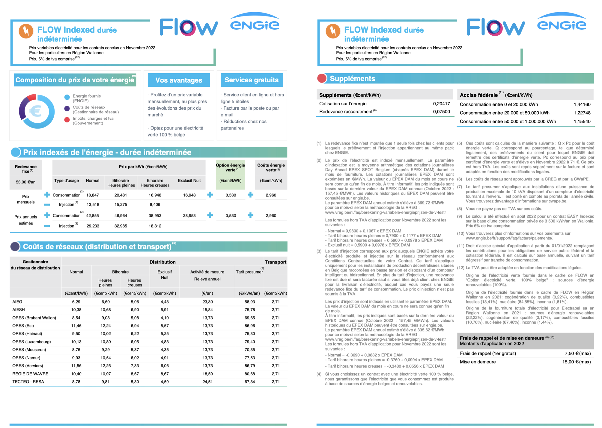
L’oeil est immédiatement attiré par la section “prix indexés de l’énergie”. On vous donne des prix trimestriels (qui seront dons mis à jour chaque trimestre), et une estimation de prix annuel.
Pourtant, ces prix sont une illusion. Pour beaucoup de contrats, ils ne contiennent simplement pas le prix que vous allez payer ce mois/trimestre/année. Si je surligne les parties effectivement utiles du contrat, on obtient ceci:
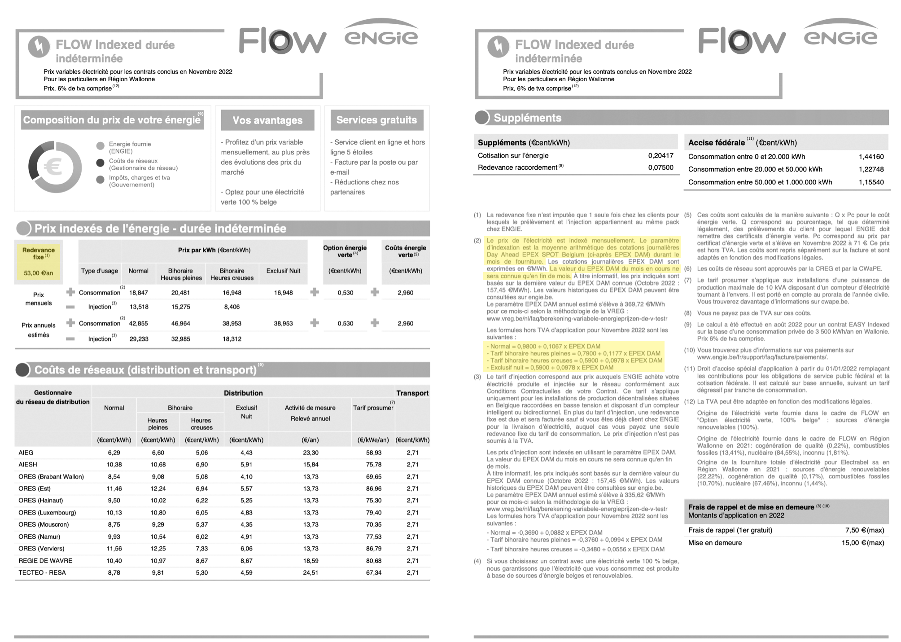
Oui, c’est majoritairement dans les petits caractères. Voici une copie du texte:
Passons ligne par ligne sur le contenu du texte.
Tout d’abord, on vous signale que la redevance fixe est de 53€/an. Cette redevance est généralement dûe en intégralité pour toute année de contrat commencée, donc il s’agit d’un moyen d’empècher les consommateurs de changer trop souvent de fournisseur. Prenez en compte cette redevance quand vous changez “avant la fin de l’année” de fournisseur.
Ensuite on vous explique que les prix du contrat changent chaque mois, en suivant le *grande inspiration* “Day Ahead EPEX SPOT Belgium”. Sous ce nom se cache en fait le marché “achat au jour le jour” de gros de l’électricité, aussi appelé le Belpex. Il s’agit d’un des (nombreux) marchés sur lequel les fournisseurs peuvent acheter leur énergie avant de vous la revendre (on rapelle que la majorité des fournisseurs ne produisent pas l’énergie qu’ils vendent).
Il est indiqué dans le contrat que le prix du mois M (disons, Janvier) est calculé à la fin de ce mois M (donc le 31 Janvier) sur base de la moyenne des prix journaliers du Belpex durant ce mois M (toujours Janvier). Par exemple, si le prix sur le belpex a été de 100€/MWh dans les deux premières semaines de Janvier, puis à 150€/MWh les deux suivantes, l’indice “EXPEX DAM” utilisé dans le contrat vaudra 125€/MWh. On ne connait donc pas le prix de l’énergie au moment où on la consomme!
Ce système, basé sur des marchés “day-ahead” (achat le jour d’avant pour le jour d’après) est à mettre en parallele avec les contrats basés sur les marchés “futures”, où on va regarder, par exemple, durant le mois M à quel prix le marché nous vend l’énergie du mois M+1, et facturer le mois M+1 aux consommateurs finaux à ce prix là. Dans ce système, le prix du mois courant est connue à l’avance.
Il existe une véritable jungle d’indices différents. Certains sont calculés par mois, d’autre par trimestres. Certains sur du day-ahead, d’autres sur du future. D’autres encore sur différentes périodes. J’y reviens plus loin dans ce document. Concentrons nous en attendant sur le véritable coeur de la fiche tarifaire: les formules de calcul.
Pour rappel, il existe 4 “méthode de facturation de l’énergie”, en fonction de votre type de compteur. Les ménages disposant de compteurs “normaux” paient un tarif unique (nommé au dessus “normal”). Les compteurs bihoraires disposent de deux tarifs, le tarif d’heure pleine (en journée en semaine) et celui d’heure creuse (généralement entre 22h et 7h ainsi que le week-end). Il existe aussi des compteurs “exclusifs nuit”, utilisés généralement pour le chauffage électrique. Chaque contrat propose donc quatre formule de calcul. Je me concentre dans la suite de ce document sur le tarif “normal”.
Les tarifs sont partout calculés comme suit: “\(x * \text{indice} + y\)”. \(x\) est appelé le multiplicateur et \(y\) le biais. Dans notre contrat Flow ci-dessus, on nous donne “Normal = 0,9800 + 0,1067 x EPEX DAM”, donc: \[x=0.1067, y=0.98, \text{indice} = \text{EPEX DAM}\]
Le biais \(y\) est une valeur en c€/kWh que le fournisseur prend peu importe la valeur de l’indice utilisé. Ensuite le fourni prend une certaine marge proportionnelle à la valeur de l’indice via \(x\).
EPEX DAM étant donné en €/MWh, il y a dans la valeur de \(x\) une conversion implicite vers du c€/kWh. En gros vous pouvez simplement retenir qu’en multipliant par 100 la valeur de \(x\) on obtient le pourcentage de l’indice utilisé dans le prix final. Ici cela donne \(106.7\%\), donc Engie prend \(6.7\%\) de marge sur la valeur du Belpex.
J’espère que vous suivez toujours! Ces indices, multiplicateurs et biais sont en dur dans votre contrat; votre fournisseur ne peut pas en changer après la signature.
La “bonne” manière de comparer les contrats n’est donc pas de regarder leur prix à un moment T, mais de comparer les frais fixes, les indices utilisés, les biais et multiplicateurs.